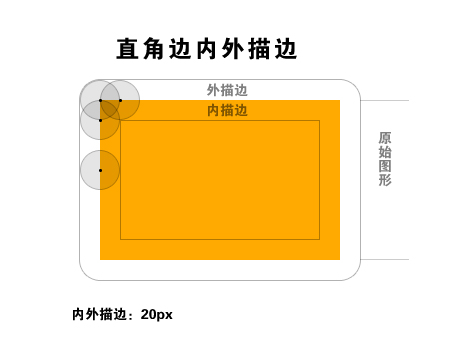

小剧在家闲来无事，随手写了些东东准备有时间传到博客里。今天就来说说之前群里有位好友问到的问题：“为什么矩形外描边之后是圆角”。
在刚接触到ps描边的时候小剧也曾被这个问题困扰过，一度小剧认为这是photoshop做得不完善并且需要改进的地方。后来经常用到图层混合模式的时候才发现ps如此设计确有其用意。因为photoshop是位图处理软件，所以在ps里的任何操作都是以像素为基准的，描边也是一样。
以下所言并非adobe官方说法，纯粹是小剧的揣测而已，并且探讨的是很单纯的直角与圆角边的情况，也不考虑透明像素的情况。
根据小剧的思考及验证，photoshop的描边应该是根据像素点的排布，找出图像的边缘，判断过内外方向后在对每个像素点在边缘的一侧做等距的描边，边缘一圈绘制完毕便形成了一个环状的面，因此再对矩形外描边的情况下会出现圆角。
基于这种现象，小剧总结了对于在对矩形和圆角矩形描边时的几种情况。1、外描边总是圆角；2、矩形内描边总是直角；3、圆角矩形的描边尺寸大于或等于圆角半径时内描边是直角；4、圆角矩形的描边尺寸小于圆角半径时内描边是圆角。下面是几种情况的示意图
在网页设计中，小剧一向只用内描边，因为在限定宽度的情况下外描边会影响达到视觉宽度，而且外描边虽然是看似圆角，但却没有真正的圆角细腻，所以，小剧不怎么使用外描边。当然外描边也有自己的用处，视个人习惯吧。